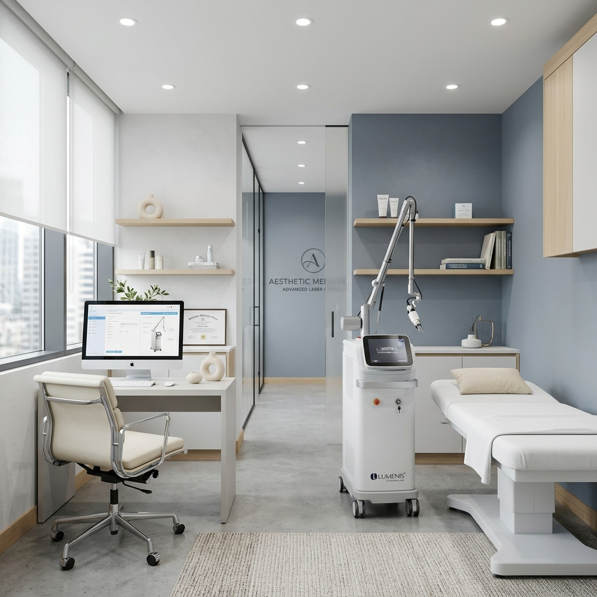

Sin cirugía
Láser CO2 periocular
Un tratamiento de resurfacing fraccionado que estimula la producción natural de colágeno en la delicada piel que rodea los ojos, mejorando su textura, firmeza y luminosidad.
- Indicado para líneas finas, fotodaño y pérdida de firmeza en párpados y contorno de ojos.
- Procedimiento ambulatorio en consultorio, con anestesia tópica y protección ocular específica.
- Realizado por una oftalmóloga: trabajar tan cerca del ojo exige un cuidado que va más allá de lo estético.
- Combinable con blefaroplastia para mejorar la calidad de la piel en el mismo procedimiento.